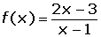
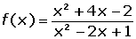
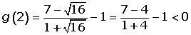
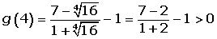
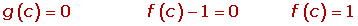

Intermediate Value Theorem Problems
1Prove that the function f(x) = x2 − 4x + 2 intersects the x-axis on the interval [0,2]. Can the same be said for the function:  ?
2Given the function:

Can it be said that f(x) is bounded in the interval [1,4]?
3Given the function f(x) = x2 + 1. Can it be said that the function exists for all values in the interval [1,5]?
4Prove that the equation: x3 + x − 5 = 0, has at least one solution x = a such that 1 < a < 2.
5Given the function f(x) = x3 − x2 + 1. Can it be said that there is at least one point, c, inside the interval [1,2] which verifies that f(c) = 0?
6Prove that the polynomial function f(x) = x3 + x + 1 has a value of zero between −1 and 0.
7Prove that the equation e−x + 2 = x has at least one real solution.
8Prove that there is a real number, x, such that sin x = x.
9Given the function:

Prove that there is a point in the open interval (2, 4) in which the function f(x) has a value of 1.
10Given the function f(x) = x3, determine if it is bounded superiorly and inferiorly in the interval [1, 5] and indicate if it reaches its maximum and minimum values within this interval.
11Prove that the function f(x) = x + sin x − 1 is continuous at  and prove that there exists at least one real root of the equation x + sin x − 1 = 0.
and prove that there exists at least one real root of the equation x + sin x − 1 = 0.
12f and g are two continuous functions in [a, b] and such that f(a) > g(a) and f(b) < g(b). Prove the existance of c withinin (a, b) such that f(c) = g (c).
1
Prove that the function f(x) = x2 − 4x + 2 intersects the x-axis in the interval [0,2]. Can the same be said for the function: ?
The first function is continuous at .
f(0) = 02 − 4 · 0 + 2 > 0.
f(2) = 22 − 4 · 2 + 2 < 0.
Since it verifies the intermediate value theorem, there is at least one c that belongs to the interval (0, 2) and intersects the x-axis.
We cannot confirm the same of the second function because it is not continuous at x = 1.
2
Given the function:
Can it be said that f(x) is bounded in the interval [1,4]?
Since f(x) is not continuous at x = 1, the function is not continuous in the closed interval [1,4], as a result it cannot be said that the function is bounded in that interval.
3
Given the function f(x) = x2 + 1. Can it be said that the function exists for all values in the interval [1,5]?
x2 + 1 = 1 x = 0
x2 + 1 = 5 x = 2
The function is continuous at R since it is a polynomial function.
It is in the interval [0, 2] as it is verified that f(0) = 1 and f(2) = 5.
Since it verifies the intermediate value theorem, the function exists at all values in the interval [1,5].
4
Using Bolzano's theorem, show that the equation: x3 + x − 5 = 0, has at least one solution for x = a such that 1 < a < 2.
f(x) is continuous in [1,2]
f(1) = 13 + 1 − 5 = −3 < 0
f(2) = 23 + 2 − 5 = 5 > 0
Since it verifies the Bolzano's Theorem, there is c (1,2) such that:
f(c) = 0c3 + c − 5 = 0.
Therefore there is at least one real solution to the equation x3 + x − 5 = 0.
5
Given the function f(x) = x3 − x2 + 1. Can it be said that there is at least one point, c, inside the interval [1,2] which verifies that f(c) = 0?
f(x) is continuous in [1, 2].
f(1) = 13 − 12 + 1 = 1 > 0.
f(2) = 23 − 22 + 1 = 5 > 0.
The Bolzano theorem cannot be applied because it does not change sign.
6
Prove that the polynomial function f(x) = x3 + x + 1 has a value of zero between −1 and 0.
f(x) is a polynomial and therefore is continuous in the interval [−1, 0].
f(−1) = (−1)3 + (−1) + 1 = −1 < 0.
f(0) = 0 + 0 + 1 = 1 > 0.
There is a c  (−1, 0) such that f(c) = 0
(−1, 0) such that f(c) = 0
7
Prove that the equation e−x + 2 = x has at least one real solution.
The function is continuous in the interval [0, 3].
f(0) = e0 + 2 − 0 > 0.
f(3) = e—3 + 2 − 3 < 0.
Since it verifies Bolzano's theorem, there is c  (0, 3) such that:
(0, 3) such that:
f(c) = 0 e−c + 2 = c.
Therefore there is at least one real solution to the equation e−x + 2 = x.
8
Prove that there is a real number, x, such that sin x = x.
Consider the function f(x) = sin x − x.
It is continuous at .
f(−π) = sin (−π) − (−π) = 0 + π = π > 0
f(π) = sin (π) − (π) = 0 − π = −π < 0
There is a c  (−π. π) such that:
(−π. π) such that:
f(c) = 0 sen c = c
Therefore, there is at least one real solution to the equation sin x = x.
9
Given the function:
Prove that there is a point in the open interval (2, 4) in which the function f(x) has a value of 1.
The exponential function is positive at , therefore the denominator of the function cannot be annulled.
There is only doubt of the continuity at x = 0, which is out of the interval being studied, therefore f(x) is continuous in [2. 4].
Consider the function g defined by g(x) = f(x) − 1.
g is continuous on the interval [2. 4].


Since it verifies the intermediate value theorem, there is a c  (2, 4) such that:
(2, 4) such that:

10
Given the function f(x) = x3, determine if it is bounded superiorly and inferiorly in the interval [1, 5] and indicate if it reaches its maximum and minimum values within this interval:
The function is continuous in the interval [1, 5], as a result it can be affirmed that it is bounded in that interval.
Aswell as being continuous in the interval [1, 5], it has fulfilled the extreme value theorem, which affirms that it attains at least one maximum and absolute minimum in the interval [1, 5].
11
Prove that the function f(x) = x + sin x − 1 is continuous at and prove that there exists at least one real root of the equation x + sin x − 1 = 0.
The function is continuous since it is the sum of continuous functions.
f(0) = 0 + sin 0 − 1 = − 1 < 0.
f(π/2) = π/2 + sin π/2 − 1 = π/2 > 0.
Since it verifies the intermediate value theorem, there is a c  (o, π/2) such that:
(o, π/2) such that:
f(c) = 0 c + sin c − 1 = 0
Therefore, there is at least one real solution to the equation x + sin x − 1 = 0.
12
f and g are two continuous functions in [a, b] and such that f(a) > g(a) and f(b) < g(b). Prove the existance of c withinin (a, b) such that f(c) = g (c).
h is the function defined by h(x) = f(x) − g(x).
Since f and g are continuous in [a, b], the function h also is.
f(a) > g(a) h(a) = f(a) − g(a) > 0
f(b) < g(b) h(b) = f(b) − g(b) < 0.
Since it verifies the intermediate value theorem, there is a c  (a, b) such that:
(a, b) such that:
h(c) = 0 f(c) − g(c) = 0 f(c) = g(c)